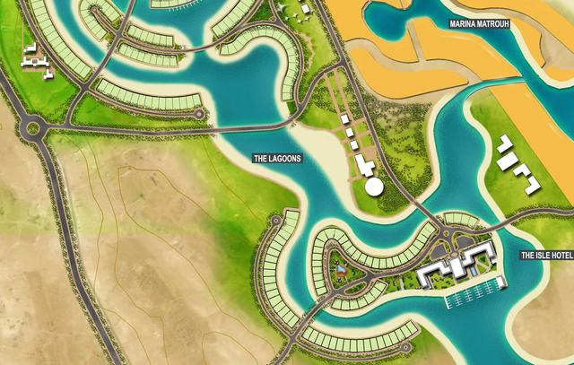

Urban planning and design in Marsa Matrouh, Egypt.
PUD has 6 projects in Marsa Matrouh, Egypt between 1994 and 2021. They include Regional Vision for the North Coast and Tourism Development Master Plan for Fuka-Matrouh, Marina Matrouh Tourist Centre and Gargoub New Port City. The work spans industrial, infrastructure, masterplan, mixed use, regional planning and tourism.
 Regional Vision for the North Coast and Tourism Development Master Plan for Fuka-MatrouhFuka-Matrouh sub-region, North Coast · 2011
Regional Vision for the North Coast and Tourism Development Master Plan for Fuka-MatrouhFuka-Matrouh sub-region, North Coast · 2011 Marina Matrouh Tourist CentreMarsa Matrouh, North Coast · 1994-2004
Marina Matrouh Tourist CentreMarsa Matrouh, North Coast · 1994-2004 Gargoub New Port CityGargoub, Matrouh · 2021
Gargoub New Port CityGargoub, Matrouh · 2021 Marina Matrouh Tourist Centre, Phase 3Marsa Matrouh, North Coast · 2004
Marina Matrouh Tourist Centre, Phase 3Marsa Matrouh, North Coast · 2004
Marina Matrouh Tourist Centre, Phase 2Marsa Matrouh, North Coast · 2000Baker Atlas Plant, MatrouhMarsa MatrouhServices used in Marsa Matrouh
Urban & Regional Planning & City MakingUrban Design & Master PlanningArchitectural & Experiential Design